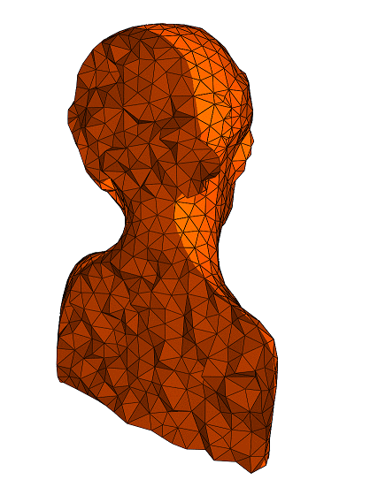
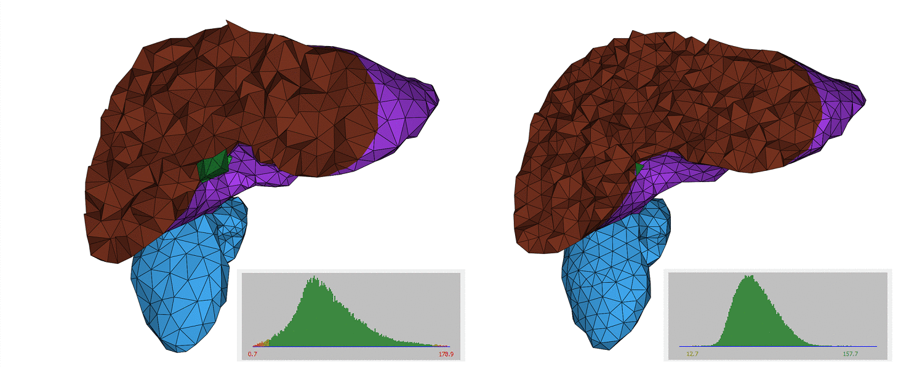

- Authors
- Jane Tournois, Noura Faraj, Jean-Marc Thiery, Tamy Boubekeur

Multi-Material Isotropic Tetrahedral Remeshing
This package implements an algorithm for quality tetrahedral remeshing, introduced by N.Faraj et al in [1]. This practical iterative remeshing algorithm is designed to remesh multi-material tetrahedral meshes, by iteratively performing a sequence of elementary operations such as edge splits, edge collapses, edge flips, and vertex relocations following a Laplacian smoothing. The algorithm results in high-quality uniform isotropic meshes, with the desired mesh density, while preserving the input geometric curve and surface features.
Specific remeshing rules have been designed to satisfy the following criteria. First, the algorithm preserves the geometric complex topology, including multi-material surface patches and polyline features. Polyline features can be defined as intersections between more than two subdomains, or listed by the user. Second, it has been made possible to remesh only a selection of cells, instead of remeshing the whole domain, while preserving or remeshing the interface surfaces between the preserved and the remeshed tetrahedra.
All the local atomic operations that are performed by the algorithm preserve the input topology of the geometric complex.
The tetrahedral remeshing algorithm improves the quality of dihedral angles, while targeting the user-defined uniform sizing field and preserving the topology of the feature complex, as highlighted by Figure Figure 60.1.
Experimental evidence shows that a higher number of remeshing iterations leads to a mesh with a improved fidelity to the sizing criterion, and higher quality dihedral angles.

API
The tetrahedral remeshing algorithm is implemented as a single free function CGAL::tetrahedral_isotropic_remeshing() that takes only two required parameters: the input triangulation, and the desired edge length, which drives the remeshing process.
Named Parameters are used to deal with optional parameters. The page Named Parameters describes their usage.
Examples
Tetrahedral Remeshing Example
The following example shows the simplest use of the tetrahedral remeshing function. The only required parameter is a given target edge length that drives the remeshing process towards a high-quality tetrahedral mesh with improved dihedral angles, and a more uniform mesh, with edge lengths getting closer to the input parameter value.
File Tetrahedral_remeshing/tetrahedral_remeshing_example.cpp
#include <CGAL/Exact_predicates_inexact_constructions_kernel.h>
#include <CGAL/Tetrahedral_remeshing/Remeshing_triangulation_3.h>
#include <CGAL/tetrahedral_remeshing.h>
#include "tetrahedral_remeshing_generate_input.h"
#include <iostream>
#include <fstream>
#include <string>
int main(int argc, char* argv[])
{
const double target_edge_length = (argc > 1) ? atof(argv[1]) : 0.1;
const std::size_t nbv = (argc > 2) ? atoi(argv[2]) : 1000;
Remeshing_triangulation tr;
CGAL::Tetrahedral_remeshing::generate_input_one_subdomain(nbv, tr);
return EXIT_SUCCESS;
}
Tetrahedral Remeshing of A Selection
Optional BGL named parameters offer more precise control on the remeshing process. In this example, a triangulation with two subdomains (defined by indices stored in cells) is given as input, but only one (defined by the Subdomain_index 2) of its subdomains is remeshed.
File Tetrahedral_remeshing/tetrahedral_remeshing_of_one_subdomain.cpp
#include <CGAL/Exact_predicates_inexact_constructions_kernel.h>
#include <CGAL/Tetrahedral_remeshing/Remeshing_triangulation_3.h>
#include <CGAL/tetrahedral_remeshing.h>
#include "tetrahedral_remeshing_generate_input.h"
struct Cells_of_subdomain
{
private:
const int m_subdomain;
public:
Cells_of_subdomain(const int& subdomain)
: m_subdomain(subdomain)
{}
bool operator()(Remeshing_triangulation::Cell_handle c) const
{
return m_subdomain == c->subdomain_index();
}
};
int main(int argc, char* argv[])
{
const double target_edge_length = (argc > 1) ? atof(argv[1]) : 0.1;
const std::size_t nbv = (argc > 2) ? atoi(argv[2]) : 1000;
Remeshing_triangulation tr;
CGAL::Tetrahedral_remeshing::generate_input_two_subdomains(nbv, tr);
CGAL::parameters::cell_selector(Cells_of_subdomain(2)));
return EXIT_SUCCESS;
}
Tetrahedral Remeshing With Polyline Features
Optional BGL named parameters offer more precise control on the remeshing process. In this example, a triangulation with polyline features that should be preserved - though resampled - during the remeshing process, is given as input. Preserving all surfaces exactly could also be achieved by setting the named parameter remesh_boundaries to false.
File Tetrahedral_remeshing/tetrahedral_remeshing_with_features.cpp
#include <CGAL/Exact_predicates_inexact_constructions_kernel.h>
#include <CGAL/Tetrahedral_remeshing/Remeshing_triangulation_3.h>
#include <CGAL/tetrahedral_remeshing.h>
#include <CGAL/property_map.h>
#include <boost/unordered_set.hpp>
#include <iostream>
#include <utility>
#include "tetrahedral_remeshing_generate_input.h"
typedef Remeshing_triangulation::Point Point;
typedef Remeshing_triangulation::Vertex_handle Vertex_handle;
typedef Remeshing_triangulation::Cell_handle Cell_handle;
typedef Remeshing_triangulation::Edge Edge;
class Constrained_edges_property_map
{
public:
typedef bool value_type;
typedef bool reference;
typedef std::pair<Vertex_handle, Vertex_handle> key_type;
typedef boost::read_write_property_map_tag category;
private:
boost::unordered_set<key_type>* m_set_ptr;
public:
Constrained_edges_property_map()
: m_set_ptr(nullptr)
{}
Constrained_edges_property_map(boost::unordered_set<key_type>* set_)
: m_set_ptr(set_)
{}
public:
friend void put(Constrained_edges_property_map& map,
const key_type& k,
const bool b)
{
CGAL_assertion(map.m_set_ptr != nullptr);
CGAL_assertion(k.first < k.second);
if (b) map.m_set_ptr->insert(k);
else map.m_set_ptr->erase(k);
}
friend value_type get(const Constrained_edges_property_map& map,
const key_type& k)
{
CGAL_assertion(map.m_set_ptr != nullptr);
CGAL_assertion(k.first < k.second);
return (map.m_set_ptr->count(k) > 0);
}
};
void set_subdomain(Remeshing_triangulation& tr, const int index)
{
for (Remeshing_triangulation::Finite_cells_iterator cit = tr.finite_cells_begin();
cit != tr.finite_cells_end(); ++cit)
{
cit->set_subdomain_index(index);
}
}
int main(int argc, char* argv[])
{
const double target_edge_length = (argc > 1) ? atof(argv[1]) : 0.02;
const int nb_iter = (argc > 2) ? atoi(argv[2]) : 1;
const int nbv = (argc > 3) ? atoi(argv[3]) : 500;
Remeshing_triangulation t3;
boost::unordered_set<std::pair<Vertex_handle, Vertex_handle> > constraints;
CGAL::Tetrahedral_remeshing::generate_input_cube(nbv, t3, constraints);
make_constraints_from_cube_edges(t3, constraints);
CGAL_assertion(t3.is_valid());
CGAL::parameters::edge_is_constrained_map(
Constrained_edges_property_map(&constraints))
.number_of_iterations(nb_iter));
return EXIT_SUCCESS;
}
Tetrahedral Remeshing After Mesh Generation
The tetrahedral remeshing algorithm is designed as a post-processing for mesh generation algorithms. The API allows to generate a tetrahedral mesh with the CGAL 3D Mesh Generation package, and further improve it with the tetrahedral remeshing algorithm. This example shows how to use tetrahedral mesh generation and remeshing in sequence, from a polyhedral domain with features.
File Tetrahedral_remeshing/mesh_and_remesh_polyhedral_domain_with_features.cpp
#include <CGAL/Exact_predicates_inexact_constructions_kernel.h>
#include <CGAL/Mesh_triangulation_3.h>
#include <CGAL/Mesh_complex_3_in_triangulation_3.h>
#include <CGAL/Mesh_criteria_3.h>
#include <CGAL/Polyhedral_mesh_domain_with_features_3.h>
#include <CGAL/make_mesh_3.h>
#include <CGAL/tetrahedral_remeshing.h>
#ifdef CGAL_CONCURRENT_MESH_3
#else
#endif
Tr, Mesh_domain::Corner_index, Mesh_domain::Curve_index> C3t3;
typename Tr::Triangulation_data_structure> Triangulation_3;
int main(int argc, char* argv[])
{
const char* fname = (argc > 1) ? argv[1] : "data/fandisk.off";
std::ifstream input(fname);
Polyhedron polyhedron;
input >> polyhedron;
if (input.fail()) {
std::cerr << "Error: Cannot read file " << fname << std::endl;
return EXIT_FAILURE;
}
std::cerr << "Input geometry is not triangulated." << std::endl;
return EXIT_FAILURE;
}
Mesh_domain domain(polyhedron);
domain.detect_features();
Mesh_criteria criteria(edge_size = 0.025,
facet_angle = 25, facet_size = 0.05, facet_distance = 0.005,
cell_radius_edge_ratio = 3, cell_size = 0.05);
C3t3 c3t3 = CGAL::make_mesh_3<C3t3>(domain, criteria);
const double target_edge_length = 0.1;
CGAL::parameters::number_of_iterations(3));
return EXIT_SUCCESS;
}
Tetrahedral Remeshing from Any Tetrahedral Mesh
The following example shows how to read a mesh from a triangulation stored in a Medit file, perform tetrahedral remeshing, and save the output triangulation. The input triangulation should follow the validity requirements of a CGAL::Triangulation_3 (valid connectivity, positive orientation of the cells, and coverage of the convex hull of the vertices).
File Tetrahedral_remeshing/tetrahedral_remeshing_from_mesh.cpp
#include <CGAL/Exact_predicates_inexact_constructions_kernel.h>
#include <CGAL/Tetrahedral_remeshing/Remeshing_triangulation_3.h>
#include <CGAL/tetrahedral_remeshing.h>
#include <CGAL/IO/File_medit.h>
#include <fstream>
int main(int argc, char* argv[])
{
const char* filename = (argc > 1) ? argv[1] : "data/sphere.mesh";
const double target_edge_length = (argc > 2) ? atof(argv[2]) : 0.1;
Remeshing_triangulation tr;
std::ifstream is(filename, std::ios_base::in);
std::ofstream os("after_remeshing.mesh");
return EXIT_SUCCESS;
}
Implementation History
This package implements the uniform version of the "Multi-Material Adaptive Volume Remesher" algorithm for quality tetrahedral remeshing, described by Noura Faraj et al. in [1].
A first version of the code was written by Noura Faraj, Jean-Marc Thiery, and Tamy Boubekeur. Jane Tournois worked on the finalization of the code, the API, and documentation.
It was initially published in CGAL-5.1.


 1.8.13
1.8.13